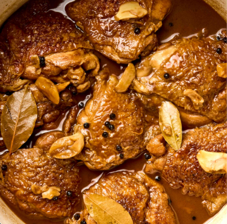
Main Dish
Chicken Adobo
A Filipino classic made with chicken, soy sauce, vinegar, garlic, and spices.
🇵🇭 A Taste of the Philippines
Explore Filipino dishes, discover their ingredients, and learn how to prepare them step by step.
Start Your Quest →KUSINAQUEST
Browse through different Filipino foods and discover recipes you can try.

A Filipino classic made with chicken, soy sauce, vinegar, garlic, and spices.
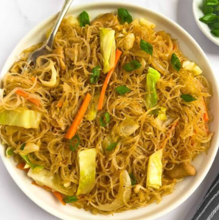
Stir-fried Filipino noodles with vegetables, meat, and savory seasoning.
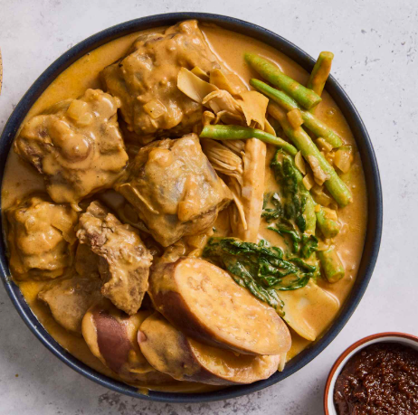
A rich Filipino stew with vegetables, meat, and a savory peanut-based sauce.
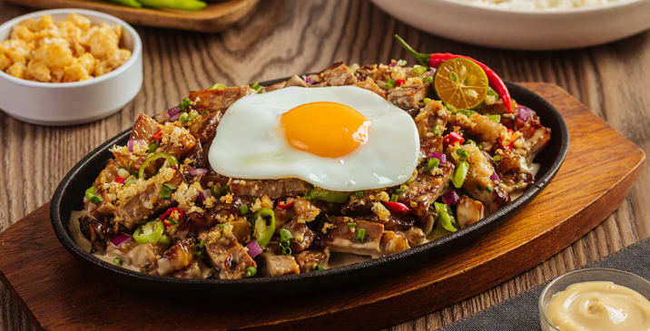
A savory Filipino dish made with chopped pork, onions, and seasonings.
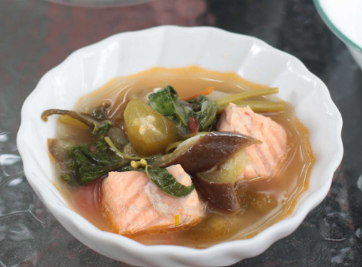
A comforting sour soup traditionally flavored with tamarind and vegetables.
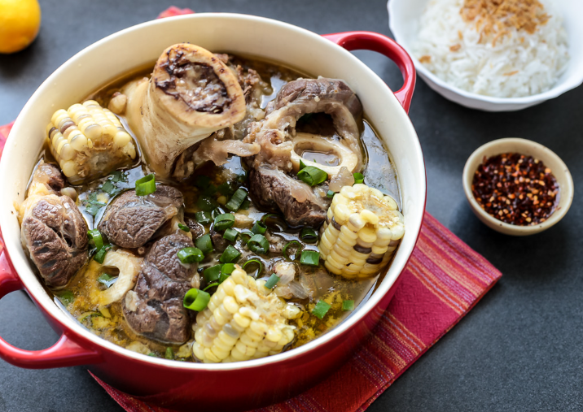
A hearty beef soup made with tender beef shank, bone marrow, and vegetables.
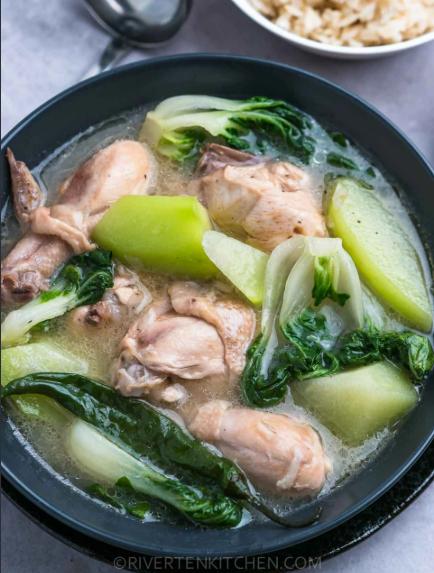
A comforting chicken soup with ginger, green papaya, and leafy vegetables.
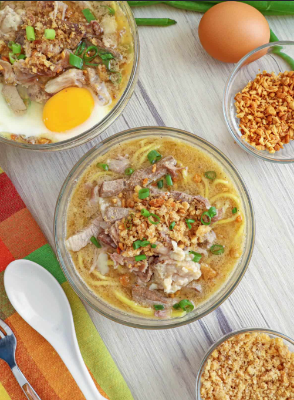
A flavorful noodle soup traditionally associated with Iloilo.
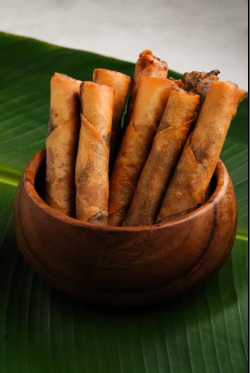
Crispy Filipino spring rolls filled with seasoned meat and vegetables.
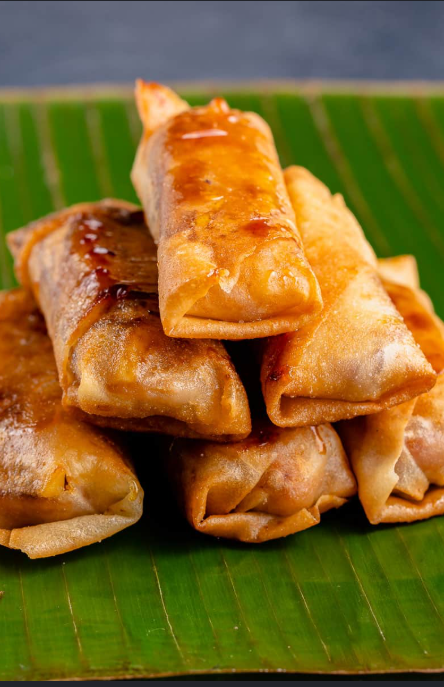
A crispy Filipino snack made with banana and caramelized sugar.
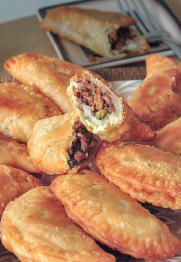
A savory pastry filled with meat, vegetables, and flavorful seasonings.
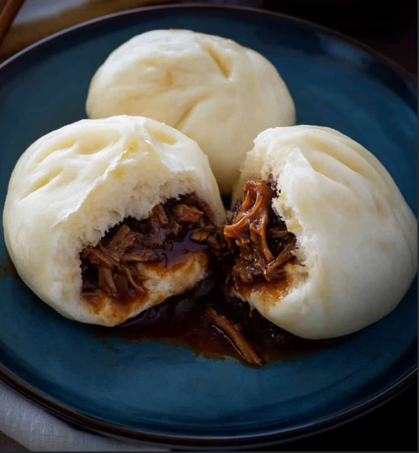
Steamed buns filled with seasoned meat and vegetables.
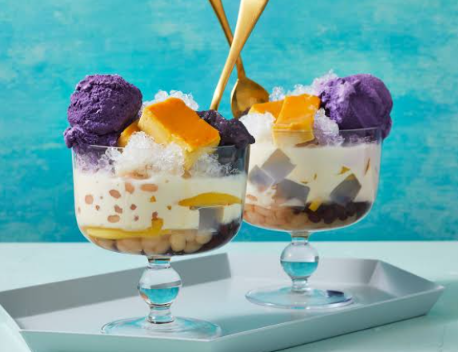
A colorful Filipino dessert made with shaved ice, milk, fruits, and toppings.
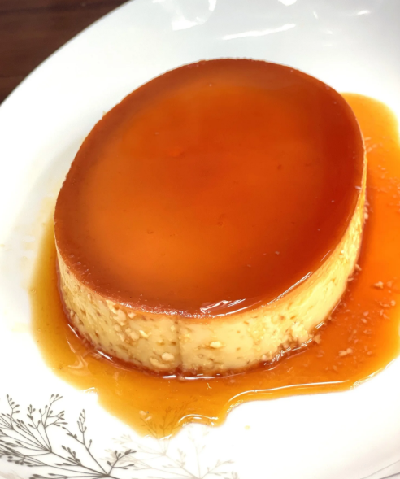
A rich Filipino custard dessert topped with golden caramel.
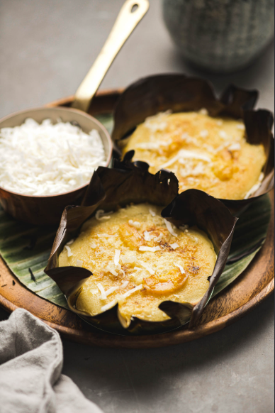
A soft Filipino rice cake traditionally enjoyed during the Christmas season.
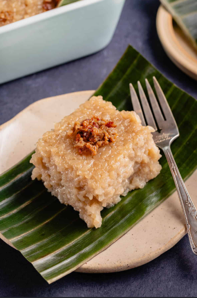
A sticky Filipino rice cake made with glutinous rice, coconut milk, and brown sugar.
ABOUT KUSINAQUEST
KusinaQuest is an interactive Filipino food explorer designed to introduce users to the diverse dishes and flavors of the Philippines. Each dish includes its ingredients and step-by-step preparation instructions.